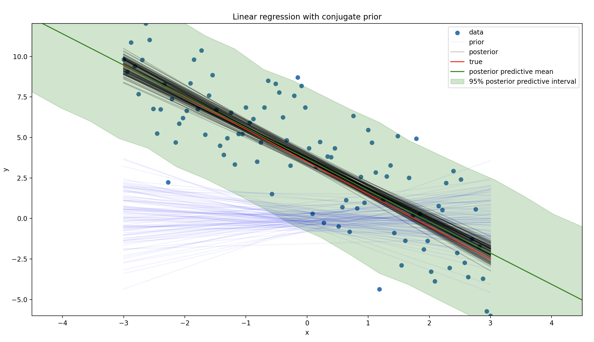

Linear Regression
We can fit linear regression that includes a predictive distribution for new data using a conjugate prior. This example only has one covariate, but the same approach can be used for multiple covariates.
Simulate Data
We are going to simulate data from a linear regression model. The true intercept is 3.5, the true slope is -2.0, and the true variance is 2.5.
import numpy as np
import pandas as pd
import matplotlib.pyplot as plt
from conjugate.distributions import NormalInverseGamma, MultivariateStudentT
from conjugate.models import linear_regression, linear_regression_posterior_predictive
intercept = 3.5
slope = -2.0
sigma = 2.5
rng = np.random.default_rng(0)
x_lim = 3
n_points = 100
x = np.linspace(-x_lim, x_lim, n_points)
y = intercept + slope * x + rng.normal(scale=sigma, size=n_points)
Define Prior and Find Posterior
There needs to be a prior for the intercept, slope, and the variance.
prior = NormalInverseGamma(
mu=np.array([0, 0]),
delta_inverse=np.array([[1, 0], [0, 1]]),
alpha=1,
beta=1,
)
def create_X(x: np.ndarray) -> np.ndarray:
return np.stack([np.ones_like(x), x]).T
X = create_X(x)
posterior: NormalInverseGamma = linear_regression(
X=X,
y=y,
normal_inverse_gamma_prior=prior,
)
Posterior Predictive for New Data
The multivariate student-t distribution is used for the posterior predictive distribution. We have to draw samples from it since the scipy implementation does not have a ppf method.
# New Data
x_lim_new = 1.5 * x_lim
x_new = np.linspace(-x_lim_new, x_lim_new, 20)
X_new = create_X(x_new)
pp: MultivariateStudentT = linear_regression_posterior_predictive(normal_inverse_gamma=posterior, X=X_new)
samples = pp.dist.rvs(5_000).T
df_samples = pd.DataFrame(samples, index=x_new)
Plot Results
We can see that the posterior predictive distribution begins to widen as we move away from the data.
Overall, the posterior predictive distribution is a good fit for the data. The true line is within the 95% posterior predictive interval.
def plot_abline(intercept: float, slope: float, ax: plt.Axes = None, **kwargs):
"""Plot a line from slope and intercept"""
if ax is None:
ax = plt.gca()
x_vals = np.array(ax.get_xlim())
y_vals = intercept + slope * x_vals
ax.plot(x_vals, y_vals, **kwargs)
def plot_lines(ax: plt.Axes, samples: np.ndarray, label: str, color: str, alpha: float):
for i, betas in enumerate(samples):
label = label if i == 0 else None
plot_abline(betas[0], betas[1], ax=ax, color=color, alpha=alpha, label=label)
fig, ax = plt.subplots()
ax.set_xlim(-x_lim, x_lim)
ax.set_ylim(y.min(), y.max())
ax.scatter(x, y, label="data")
plot_lines(
ax=ax,
samples=prior.sample_beta(size=100, random_state=rng),
label="prior",
color="blue",
alpha=0.05,
)
plot_lines(
ax=ax,
samples=posterior.sample_beta(size=100, random_state=rng),
label="posterior",
color="black",
alpha=0.2,
)
plot_abline(intercept, slope, ax=ax, label="true", color="red")
ax.set(xlabel="x", ylabel="y", title="Linear regression with conjugate prior")
# New Data
ax.plot(x_new, pp.mu, color="green", label="posterior predictive mean")
df_quantile = df_samples.T.quantile([0.025, 0.975]).T
ax.fill_between(
x_new,
df_quantile[0.025],
df_quantile[0.975],
alpha=0.2,
color="green",
label="95% posterior predictive interval",
)
ax.legend()
ax.set(xlim=(-x_lim_new, x_lim_new))
plt.show()
